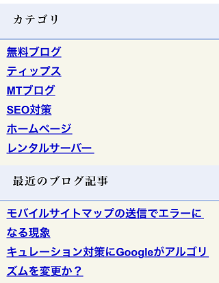
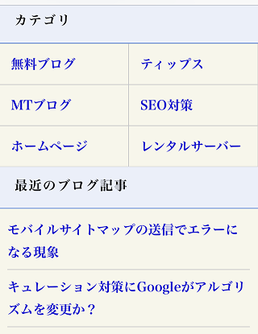
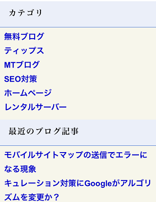
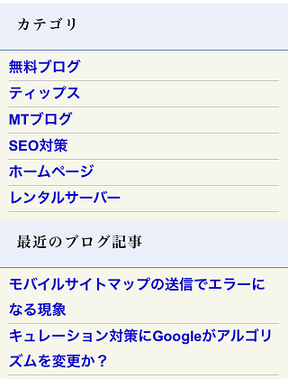
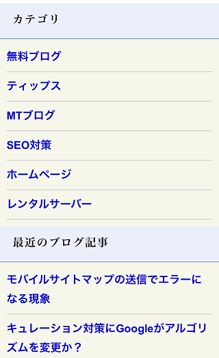
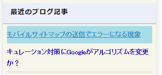
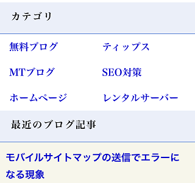
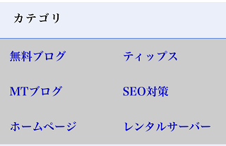
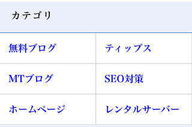
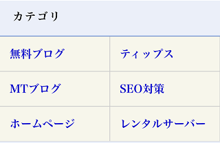

タップしやすいスマホサイトの作り方
以前、レスポンシブウェブデザインで当ブログをスマホに対応したのですが、当初はこのような形で表示していました。

これはサイドバーのフロートを解除し、widthの横幅をスマホのサイズに合わせただけなのですが、この状態ではサイドバーのメニューリストがクリックしずらいため、再度カスタマイズすることにしました。
これまでの経緯についてはこちらのページをご参照ください。
→ 当ブログをスマホに対応しました。
最終的には以下のようになったのですが、多少はユーザビリティーが向上したと感じております。

今回はこのカスタマイズ手順についてご紹介いたします。
■アンダーラインを取る
まずは、text-decoration:none;でアンダーラインをとっておきましょう。スマホ用サイトの場合、メニューリストなどのリンクにはアンダーラインを付けない方がすっきりして見やすいです。
.example ul li a{text-decoration:none;}

■リストタグを区切る
次に、このメニューリストに区切り線を入れておくとタップしやすくなります。リスト要素にborder-bottomで下線を入れておくとよいでしょう。
.example ul li {border-bottom:1px solid #ccc;}

■リストタグの上下の幅を広げる
次に、上下にpaddingを加えてリストタグに高さを出しましょう。
.example ul li a{padding: 7px 0;display:block;text-decoration:none;}

クリック可能領域を広げるため「aタグ」にpaddingを加えておりますが、aタグはインライン要素のため、「display:block;」を付けて上下にpaddingを設定しております。
この「display:block;」を加えることにより、リスト領域全体をタップできるようになります。

■カテゴリをブロック化
次に、カテゴリのリストの箇所に、categoryなどの適当なIDやclassを割り当ててフロート（横並び）します。リスト要素にはwidth:50%;などの幅を設定して二つづつ表示されるようにします。
.category {width:100%;}
.category ul li {width:50%;float:left;text-indent:14px;}
また、適当な箇所に「clear:both;」を差し込んでフロートを解除しておきましょう。

当サイトの場合、メニュータイトルの部分に「clear:both;」を入れました。
■ブロックに枠線を付ける
また、ボックスに枠線を付けますが、一旦、カテゴリの要素全体を「枠線の色」で背景を塗りつぶします。
.category {background-color:#ccc;}

次に、aタグにmarginを0.5px程度指定して背景色を白に設定すれば、marginの隙間から背景色の灰色が表示されますので、枠線と同じように表示されます。
.category ul li a{margin:0.5px;background-color:#fff;display:block;height:50px;line-height: 50px;}

最後に、背景色を白ではなく、適当な色に設定すればぶなんに表示されるはずです。
.category ul li a{background-color:#F7F6EB;}

より詳細なCSSについては、当サイトのHTMLソースとスタイルシートをご参照ください。上記のようにカスタマイズするとタップしやすくなり、スマホで閲覧時のユーザビリティーの向上につながるかもしれません。